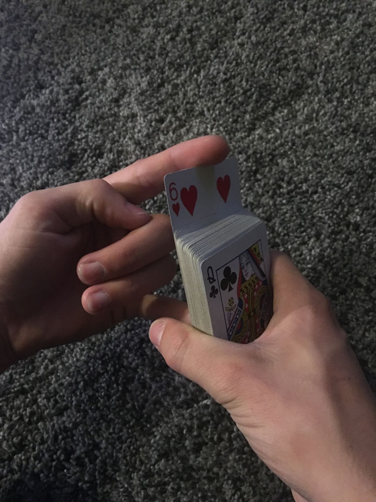

Directions
| Step |
Image |
Directions |
Details |
| Step 1 |
|
Show the audience it's a normal deck of cards |
- Show with your hands that there is nothing special about the deck
- After showing, prepare your hands for the trick
|
| Step 2 |
|
Display 3 cards from the back of the deck, Hiding a 4th at the back |
- To start, pull the back card from the deck down an inch but still make sure its hidden
- Next, pull the 3 next cards from the back of the deck upwards (leaving them in the deck) and shift them so they can be identified
- Ask the audience to pick 1 of the 3 cards you've pulled outward
- You do not need to know the card
- You only need to remember its position
|
| Step 3 |
|
Square the cards and count in as they are faced down |
- Knowing the position of the card (1,2,3), count in to the position while disposing the cards into the deck
- Remember, there was an extra card in the back so when you finish counting in and shuffing the cards, the card they chose will be on top.
- The audience will think the card they chose will be shuffled in the deck
|
| Step 4 |
 |
Face the cards back to the audience and tap a finger on the deck 3 times |
- Tap your pointer finger on the deck 3 times
- On the 3rd slowly raise the back card with your pinky and the pointer finger
|